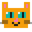
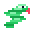

도로랜드 이야기
도로랜드는 어떤 곳인가요?
도로랜드는 기술과 자연이 함께 움직이던 상상 속 테마파크예요. 여러분이 만든 6개의 키트가 멈춘 구역들을 하나씩 다시 움직이게 합니다.

구매한 키트를 열고 구성품 확인, 만들기, 기록, 자료 확인까지 이 화면에서 차례대로 따라가면 됩니다.
상자 속 부품을 보고 빠진 것이 없는지 먼저 확인해요.
학생용 설명과 문제 해결 안내를 보며 혼자서도 진행할 수 있어요.
실험 기록, 인증서, PDF와 영상을 한곳에서 확인할 수 있어요.
구매한 키트를 누르면 바로 시작할 수 있어요.

 1
1
블루투스 스피커를 조립하고 음악이 나오는지 바로 확인해 보세요.

 2
2

무드등을 조립하고 주변 밝기에 따라 빛이 달라지는지 살펴보세요.
두 발 로봇을 조립하고 걷는 움직임이 어떻게 만들어지는지 확인해 보세요.
로봇 자동차를 조립하고 손 움직임을 따라가는지 시험해 보세요.
게임기를 조립하고 버튼으로 직접 움직이는 게임을 실행해 보세요.

 6
6

초음파 피아노를 조립하고 손 거리에 따라 음이 바뀌는지 연주해 보세요.
도로랜드는 기술과 자연이 함께 움직이던 상상 속 테마파크예요. 여러분이 만든 6개의 키트가 멈춘 구역들을 하나씩 다시 움직이게 합니다.